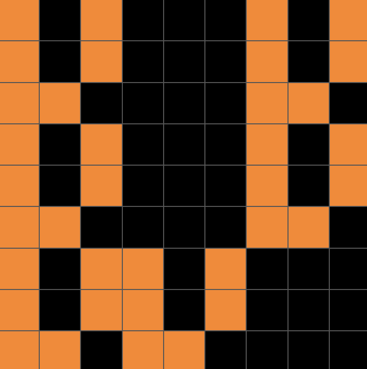

In the first example, it looks like each square in the input becomes more zoomed out in the output.
This isn't enough information to solve the test case, since I don't have an exact mapping. To obtain the mapping, I need to figure out exactly how the "zooming out" works.
Let me try to map each square in the input to the set of "zoomed out" squares in the output.
Wait, it looks like I can lay one square in the input on top of a 3x3 sub-grid in the output.
Since each input square maps to a 3x3 sub-grid, and the input is 3x3, the output must be 9x9:
Starting with square (1,2) in the input (orange):
It fails because the wrong squares are black. My hypothesis is wrong, but the rule remains correct, yet too general.
What makes examples 1 and 2 different? Why are different squares black for both?
I'm not sure. Let me look at the other examples.
Wait a minute. In example 3, I can see in the first 3x3 sub-grid, the pattern of black squares is exactly the pattern in the input.
Wait a minute, the entire 3x3 sub-grid is the exact same as the input 3x3 grid.
This is a surprising result. Let me see if it holds true for all examples.
Check: example 1, example 2, example 4, example 5.
It looks like the rule holds true for all examples. This is enough information to solve the test case.
